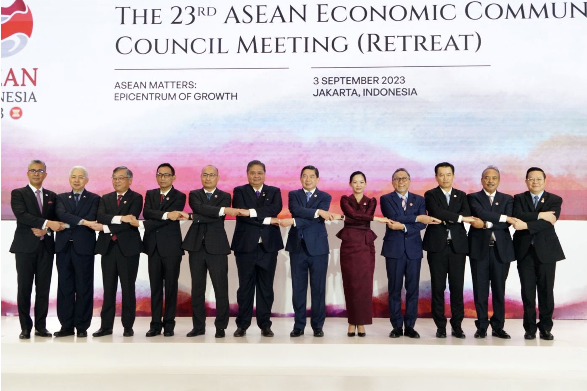
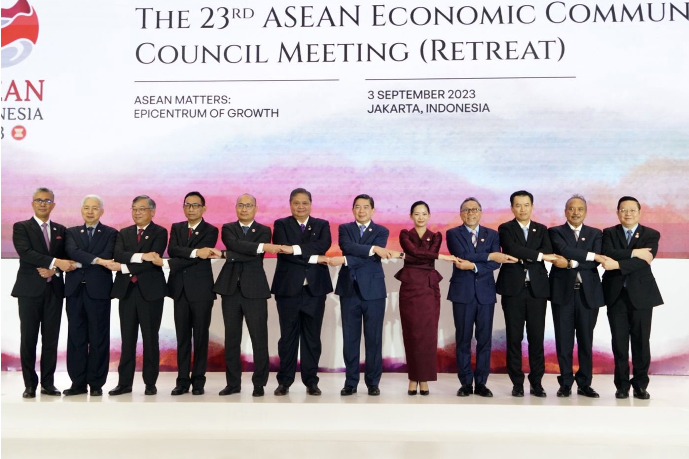

Ekonomi
Peran Indonesia
Indonesia memiliki peran penting dalam meningkatkan perdagangan internasional dan mendorong pertumbuhan ekonomi global. Salah satu caranya adalah dengan aktif terlibat dalam World Trade Organization (WTO). Melalui WTO, Indonesia ikut merumuskan kebijakan perdagangan yang adil dan berkelanjutan. Misalnya, Indonesia mendorong penghapusan tarif ekspor untuk produk unggulannya, seperti kopi dan makanan laut, sehingga produk-produk ini dapat lebih mudah bersaing di pasar internasional. Langkah ini tidak hanya meningkatkan ekspor tetapi juga membuka peluang bagi petani dan nelayan Indonesia untuk mendapatkan penghasilan lebih baik. Selain itu, Indonesia juga memainkan peran penting dalam ASEAN Economic Community (AEC) atau Masyarakat Ekonomi ASEAN. Melalui AEC, Indonesia membantu menciptakan integrasi ekonomi di Asia Tenggara dengan mempermudah perdagangan barang, jasa, dan tenaga kerja antarnegara anggota. Sebagai contoh, produk Indonesia seperti pakaian dan kerajinan tangan kini lebih mudah masuk ke pasar Malaysia atau Thailand, sementara tenaga kerja terampil Indonesia, seperti perawat, memiliki kesempatan bekerja di Singapura. Peran ini tidak hanya memperkuat posisi ekonomi Indonesia di kawasan, tetapi juga menunjukkan kontribusi nyata Indonesia dalam mendorong pertumbuhan ekonomi global.
Negara terkait
Indonesia secara aktif bekerja sama dengan negara-negara ASEAN, seperti Thailand, Malaysia, Singapura, dan lainnya, melalui ASEAN Economic Community (AEC) atau Masyarakat Ekonomi ASEAN. Dalam kerja sama ini, Indonesia berusaha menciptakan pasar yang lebih terintegrasi di kawasan Asia Tenggara untuk memperkuat pertumbuhan ekonomi regional. Salah satu contohnya adalah penghapusan hambatan perdagangan, seperti pengurangan pajak impor dan ekspor barang antar negara anggota ASEAN. Dengan kebijakan ini, produk Indonesia seperti tekstil, kerajinan tangan, dan makanan olahan menjadi lebih mudah masuk ke pasar negara tetangga, seperti Malaysia dan Filipina. Selain itu, aliran tenaga kerja profesional seperti perawat dan insinyur juga semakin lancar, sehingga banyak pekerja Indonesia yang dapat bekerja di Singapura atau Thailand dengan proses yang lebih mudah. Langkah ini tidak hanya membantu ekonomi Indonesia tumbuh, tetapi juga berkontribusi pada stabilitas ekonomi dunia dengan menciptakan sistem perdagangan yang lebih transparan dan inklusif.
 
